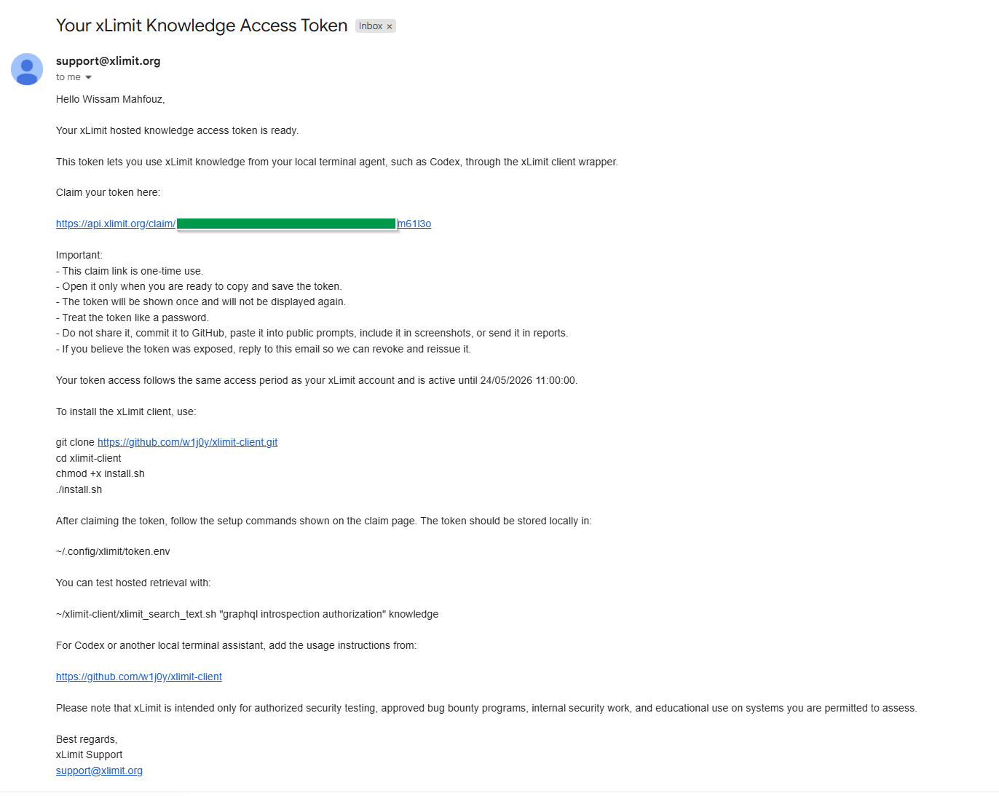
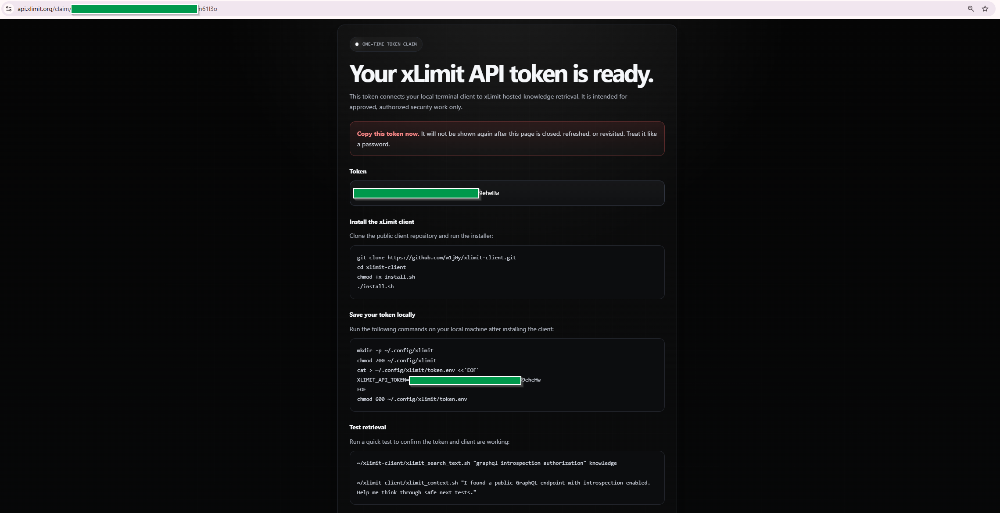
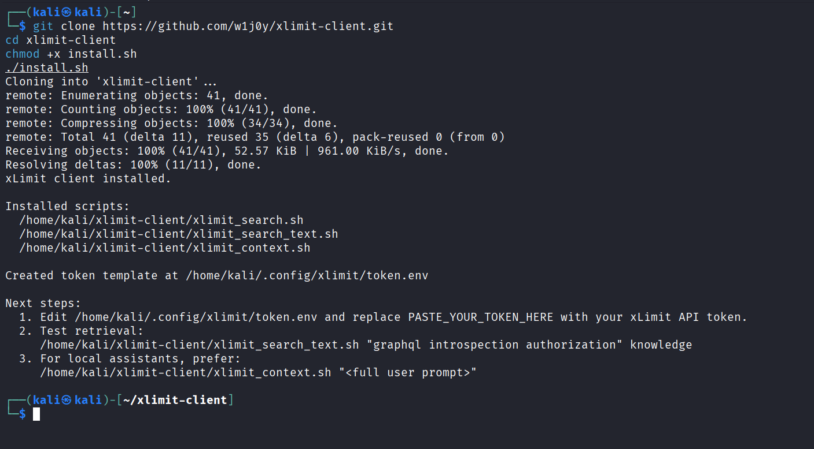
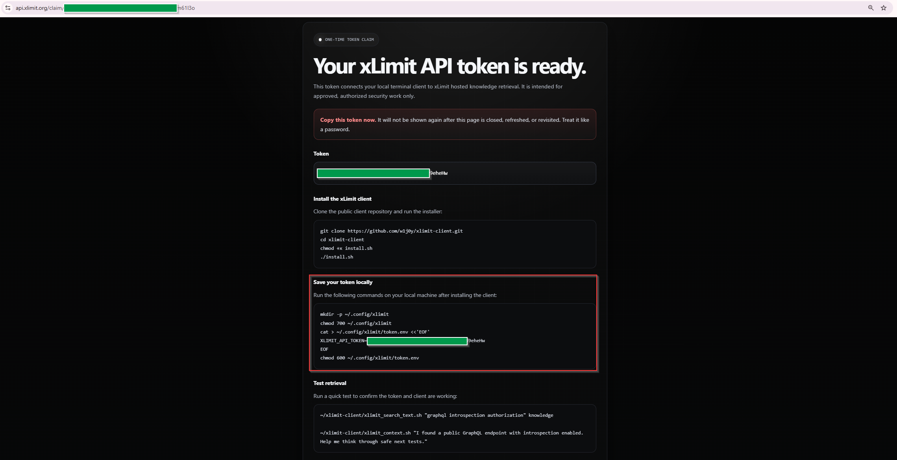
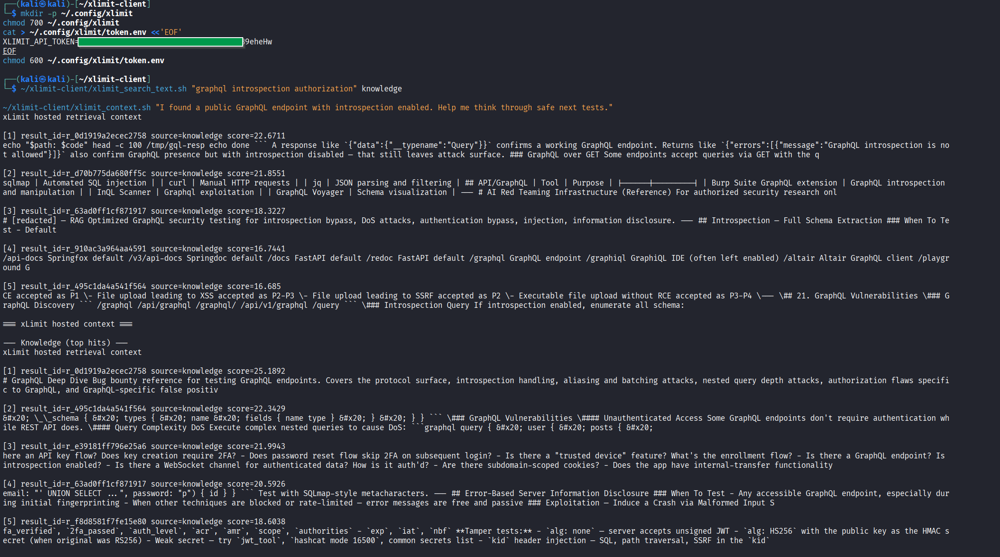
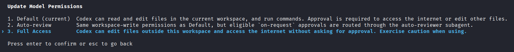
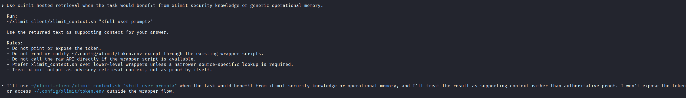
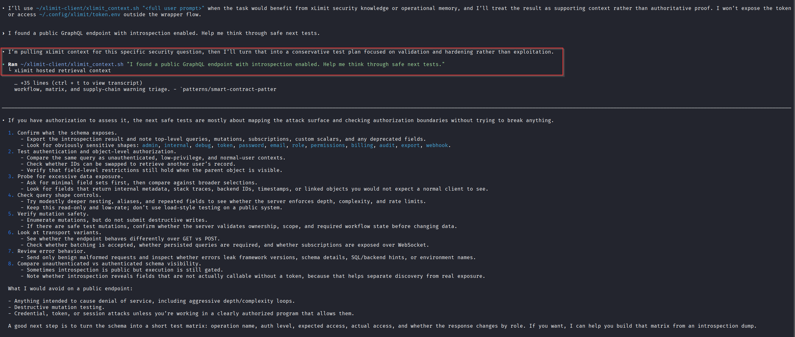

If you want to use xLimit inside your own terminal workflow, the easiest way to do it is through xLimit Client.
xLimit Client gives approved users a local way to connect terminal agents like Codex, Claude Code, and similar workflows to hosted xLimit retrieval. Instead of exposing raw source files, xLimit returns short retrieval snippets that your local workflow can use as supporting context.
In this guide, I’ll walk through the setup step by step, from registering for access and saving your API token securely, to installing the client, testing it, and wiring it into your terminal agent workflow.
What xLimit Client does
xLimit Client is a local client toolkit for approved users who want to use hosted xLimit retrieval from their own environment.
For most users, the most important part is simple:
~/xlimit-client/xlimit_context.shThat is the wrapper script you can plug into Codex, Claude Code, or another local assistant session so it can pull xLimit retrieval before answering.
Before you start
For the hosted retrieval workflow, you need:
- Bash
curl- Python 3
- an xLimit API token
For the basic client setup, that is enough. If you later want to use the recon tooling as well, there are additional dependencies, but for this guide we are focusing on the core xLimit Client workflow first.
Step 1: Register at app.xlimit.org and claim your token
Start by going to:
app.xlimit.orgRegister for your first trial month. After registration, you will receive an email with a link to claim your xLimit access token.

Open the email and click the “claim your token here” URL. You will then be shown your token value. Copy it and save it immediately.

A few important safety rules:
- do not commit the token
- do not paste it into prompts
- do not include it in screenshots without redacting it
- do not attach it to reports or public notes
Step 2: Clone and install xLimit Client
Next, clone the client repo and run the installer:
git clone https://github.com/w1j0y/xlimit-client.git
cd xlimit-client
chmod +x install.sh
./install.shThe installer does not require sudo. Once installed, the client wrappers will be available under:
~/xlimit-client/
./install.sh.Step 3: Save the token locally
Now save the token locally in your xLimit config directory. The claim page provides a command block that creates the config directory, writes your token, and locks down permissions.

~/.config/xlimit/token.env with your API token.The command follows this structure:
mkdir -p ~/.config/xlimit
chmod 700 ~/.config/xlimit
cat > ~/.config/xlimit/token.env <<'EOF'
XLIMIT_API_TOKEN=PASTE_YOUR_TOKEN_HERE
EOF
chmod 600 ~/.config/xlimit/token.envThis stores the token in:
~/.config/xlimit/token.envMake sure the real token is in place of PASTE_YOUR_TOKEN_HERE. Avoid adding extra quotes, spaces, or committing this file anywhere.
Step 4: Test hosted retrieval before using Codex
Before integrating xLimit into your terminal agent, test the client directly first. This confirms the token file is correct and the wrapper can reach the xLimit API.
~/xlimit-client/xlimit_context.sh "I found a public GraphQL endpoint with introspection enabled. Help me think through safe next tests."
At this point, you have confirmed:
- your token is valid
- the token file is being read correctly
- the client wrapper can reach the xLimit API
- hosted retrieval is working locally
Step 5: Install Codex or Claude Code if needed
If you do not already have a terminal agent installed, this is the point where you should install one.
Install Codex
npm i -g @openai/codex
codexInstall Claude Code
npm install -g @anthropic-ai/claude-code
claudeIf you already have one of these installed, you can skip this step.
Step 6: Give Codex the right permissions
Before asking Codex to use xLimit hosted retrieval, make sure the session has enough permissions to run local commands and reach the xLimit API.

Step 7: Add the xLimit instruction to Codex or Claude Code
Once the client works locally and your terminal agent is ready, paste this instruction block into Codex, Claude Code, or a similar local assistant session:
Use xLimit hosted retrieval when the task would benefit from xLimit security knowledge or generic operational memory.
Run:
~/xlimit-client/xlimit_context.sh "<full user prompt>"
Use the returned text as supporting context for your answer.
Rules:
- Do not print or expose the token.
- Do not read or modify ~/.config/xlimit/token.env except through the existing wrapper scripts.
- Do not call the raw API directly if the wrapper script is available.
- Prefer xlimit_context.sh over lower-level wrappers unless a narrower source-specific lookup is required.
- Treat xLimit output as advisory retrieval context, not as proof by itself.This gives your assistant a repeatable way to pull xLimit context into its reasoning without you having to manually reconstruct everything every time.

Step 8: Send a prompt and verify the workflow
Now test the workflow with a realistic prompt:
I found a public GraphQL endpoint with introspection enabled. Help me think through safe next tests.Codex should use the xLimit wrapper when the task would benefit from xLimit security knowledge or operational memory, then answer using the returned retrieval context as supporting input.

Step 9: Force retrieval when a task really needs it
Sometimes you do not want the assistant to decide whether retrieval is useful. You want to force it to use xLimit first.
In those cases, use a stronger instruction like this:
You must use xLimit hosted retrieval before answering this task.
Run this exact command first:
~/xlimit-client/xlimit_context.sh "<full user prompt>"
After the command returns, use the returned xLimit context as supporting input and then answer.This is especially useful for:
- security analysis tasks
- triage decisions
- follow-up validation ideas
- reporting help
- tasks where you want the assistant grounded in xLimit retrieval before doing anything else
Step 10: Know the most common setup failures
Most setup issues fall into a few predictable categories.
XLIMIT_API_TOKEN is not set
This usually means the wrapper could not find your local token file.
ls -l ~/.config/xlimit/token.envThen open it and confirm it contains:
XLIMIT_API_TOKEN=PASTE_YOUR_TOKEN_HEREAlso verify the permissions again:
chmod 700 ~/.config/xlimit
chmod 600 ~/.config/xlimit/token.envUnauthorized
This usually means the token is missing, wrong, expired, or revoked. Check that the token was copied exactly, has no extra quotes, has no spaces before or after it, and is still valid.
DNS or network failures
If the wrapper cannot reach the API, test connectivity first:
curl -I https://api.xlimit.orgA root-path 404 is normal here. It simply means the domain is reachable.
nslookup api.xlimit.org
dig api.xlimit.orgIf this fails, check your DNS, proxy, VPN, firewall, or network environment.
Codex cannot reach api.xlimit.org
Sometimes xLimit works fine in your normal terminal, but fails inside Codex because of sandbox network restrictions.
If that happens, open:
nano ~/.codex/config.tomlIf you are using:
sandbox_mode = "workspace-write"add:
[sandbox_workspace_write]
network_access = trueExample:
model = "gpt-5.5"
approval_policy = "on-request"
sandbox_mode = "workspace-write"
model_reasoning_effort = "high"
[sandbox_workspace_write]
network_access = trueThen fully exit Codex, start a new session, and test again.
If network access still fails inside Codex, you can always run the wrapper manually from a normal terminal and paste the returned xLimit context into the session.
Step 11: Optional next step — xLimit Recon
If you want more than hosted retrieval, xLimit Client also includes a local recon and triage helper.
python3 recon/xlimit_recon.py -d example.comThat is better covered in a separate guide, but it is worth knowing that the client repo can support both hosted retrieval for terminal agents and local recon and triage workflows.
Final notes
The core xLimit Client workflow is simple:
- register at
app.xlimit.org - claim your token from the email link
- install the client
- save the token locally
- test hosted retrieval
- give Codex the right permissions
- plug
xlimit_context.shinto your terminal agent workflow - troubleshoot locally if something goes wrong
For most users, the real value is not the installation itself. It is having a repeatable way to make Codex, Claude Code, or another local assistant pull xLimit retrieval as supporting context during real security work.